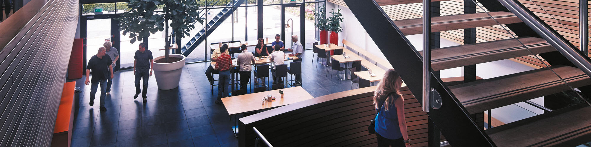
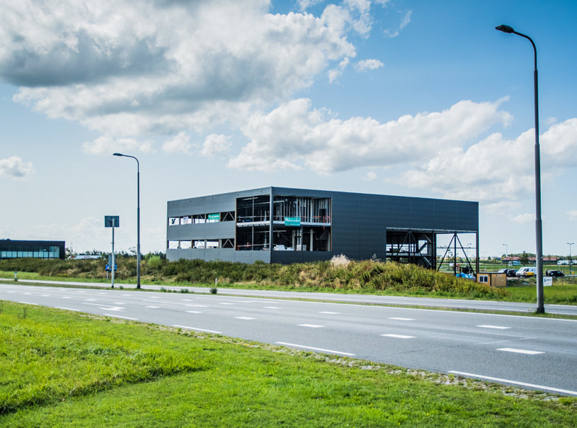

Tijdens het HBO-I Job event ben ik meerdere soorten organisaties tegengekomen, waaronder:
Software organisaties, als functie bij een software organisatie ben ik bijvoorbeeld software engineer, Platform Engineer en Analist tegengekomen.
Technieken die ik bij deze organisaties heb gezien zijn Docker en het platform Microsoft Azure.
Detailhandel, voorbeelden van functies zijn PHP developer en javascript developer.
De technieken die hiervoor worden gebruikt zijn natuurlijk PHP en Javascript,
maar SQL, HTML, CSS en Docker heb ik ook gezien als technieken.
Consultancy, deze organisaties leken grotere bedrijven te zijn, hier heb ik de functies Data Analytics, Data Engineer en Data Management voor zien komen.
voorbeelden van technieken die ik hiervoor heb gezien zijn SQL, Agile en Azure. Ook zag ik als functie Cybersecurity,
waarvoor bijvoorbeeld de technieken DevSecOps en Endpoint security werden toegepast.
Overheidsorganisaties, bij deze organistaties heb ik onder andere de functies software engineer, front-end developer, Database & Server Administrator en Analist gezien.
voorbeelden van de technieken die hier bij worden toegepast zijn Docker, Git en scrum.
Financiële organisaties, grote en erg formele bedrijven, een paar voorbeelden van functies binnen deze organisaties zijn Data Analytics,
Front-end engineer, Software engineer en Linux engineer.
Het OS Linux word hier bijvoorbeeld gebruikt, ook talen zoals Javascript, HTML5 en CSS heb ik hier gezien.
De programmeertalen die ik het meest gebruikt heb zien worden voor functies als Developer zijn Java en C#
en het framework .NET werd hier ook vaak voor gebruikt.
Deze functie heb ik bij alle organisatie soorten die ik heb opgenoemd ook terug gezien.
Syntess Software is een Software organisatie. Een voorbeeld van een functie is Software Developer, met technieken als Java, .NET en Docker. 
YourSuprise is een Detailhandel organisatie, voorbeelden van functies zijn PHP Developer, Javascript developer. Als technieken worden hier natuurlijk dan ook PHP en Javascript gebruikt. 
De organisaties zijn ingedeeld op volgorde van mijn voorkeur, dus bovenaan staat de organisatie met de meeste voorkeur en onderaan de organistatie met de minste voorkeur voor mij.